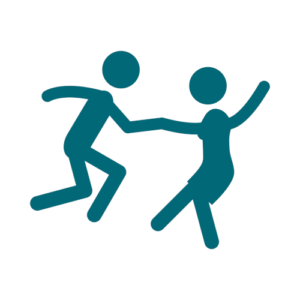

Vad är dansdata.se?
Dansdata.se är en kommande, crowdsourcad, informationskälla för socialdans i Sverige.
Målet är att göra det enklare för dansare att hitta dansevenemang. Vi tror det målet bäst uppnås genom att hjälpa arrangörer, föreningar, band, fotografer, m.fl. att nå ut till danspubliken.
Informationen som lagras på dansdata.se kommer göras fritt tillgänglig (eller så nära därtill som möjligt) för utvecklare genom ett API (maskinvänligt format) så att de kan att bygga ytterligare appar, hemsidor och program som når ut till danspubliken.
Jag som står bakom dansdata.se heter Felix Zedén Yverås och arbetar till vardags som mjukvaruutvecklingskonsult. Programvaran bakom dansdata.se utvecklas öppet på GitHub.